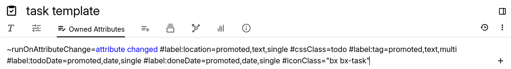

Attributes
In Trilium, attributes are key-value pairs assigned to notes, providing additional metadata or functionality. There are two primary types of attributes:
- Labels: Simple key-value text records
- Relations: Named links to other notes
These attributes play a crucial role in organizing, categorising, and enhancing the functionality of notes.

Labels
Labels in Trilium can be used for a variety of purposes:
- Metadata: Assign labels with optional values for categorization,
such as
#year=1999,#genre="sci-fi", or#author="Neal Stephenson" - Configuration: Labels can configure advanced features or settings
- Scripts and Plugins: Used to tag notes with special metadata, such as the "weight" attribute in the Weight Tracker.
Labels are also searchable, enhancing note retrieval.
Common Labels for Advanced Configuration
See the corresponding section in Attribute Reference for a comprehensive list of attributes.
Relations
Relations define connections between notes, similar to links.
Uses
- Metadata Relationships: For example, linking a book note to an author note
- Scripting: Attaching scripts to events or conditions related to the note
Common Relations
See the corresponding section in Attribute Reference for a comprehensive list of relations.
Multiplicity
Attributes in Trilium can be "multivalued", meaning multiple attributes with the same name can coexist.
Attribute Definitions and Promoted Attributes
Special labels create "label/attribute" definitions, enhancing the organization and management of attributes. For more details, see Promoted Attributes.
Attribute Inheritance
Trilium supports attribute inheritance, allowing child notes to inherit attributes from their parents. For more information, see Attribute Inheritance.